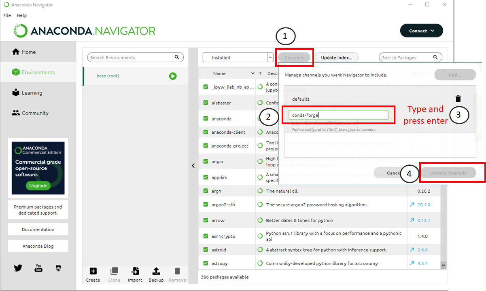
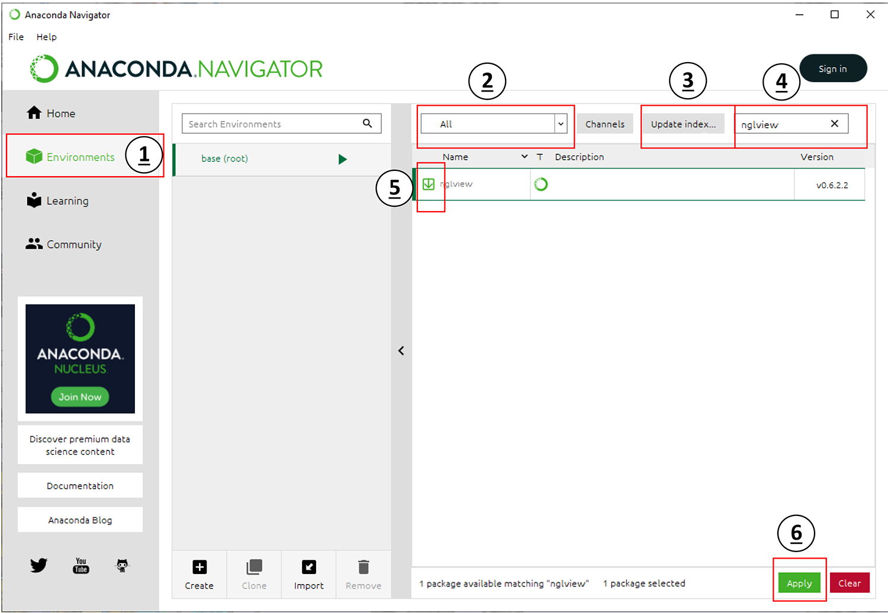

Set Up#
This workshop is about applying scripting in the Python programming language to problems in biochemistry and molecular biology. You will learn about Python syntax, how to work with files, data analysis and plotting with examples that you can directly apply to your teaching and research. In this workshop we will be using Jupyter notebooks, which you will be able to set up once you have installed Anaconda.
Installing Python through Anaconda#
Python is a popular language for scientific computing, and great for general-purpose programming as well. Installing all of its scientific packages individually can be a bit difficult, however, so we recommend the all-in-one installer Anaconda.
Navigate to the download page for Anaconda.
Download the appropriate installer for your operating system. Make sure you get the installer listed under Python 3 (not 2.7).
Double click the installer icon and follow the set-up instructions, keeping most of the default options. If you are Windows, make sure to choose the option Make Anaconda the default Python during installation.
Install nglview#
This workshop covers created molecular visualizations using the Python package nglview. This package does not come with Anaconda, so we have to install it. The next section describes how to install the package nglview using the Anaconda Navigator.
From Finder or Spotlight (Mac OS) or the Start Menu (Windows) find the Anaconda Navigator. The icon looks like a green circle. From your Anaconda Navigator window, click the button on the left side which says “Environments”.
Once you are in your environments tab, you will need to add a new “channel”. Channels are places Anaconda will look for packages which it wants to install.

Follow this procedure to add a channel to Anaconda. The numbers below correspond to where you should click in the image above.
Click the “channels” button.
Type “conda-forge” in the text box that appears.
Press Enter on your keyboard
Click the “Update Channels” button when it turns green.
Next, you must install the package NGLView. Follow the procedure given below to install the package.

Make sure you are still in your Environments tab.
Set the drop-down menu labeled with
2toAll.Click the button labeled in
3and wait for this check to complete.Type
nglviewinto the search bar labeled in4.Select the checkbox next to the result in
5.Click the
Applybutton labeled in6to download and install the package [nglview]. This package is a molecular visualizer that can be used in browsers and Jupyter notebooks.
Obtain lesson materials#
Download the files needed for these lessons here.
Create a folder called
biochemist-pythonon your Desktop.Move the downloaded materials to the new folder.
Unzip the file.
Start a Jupyter notebook#
From Finder or Spotlight (Mac OS) or the Start Menu (Windows) find the Anaconda Navigator. The icon looks like a green circle. Click Launch under Jupyter Notebook (not JupyterLab). It may take a few seconds to load the page, especially if it is the first time you have ever used the jupyter notebook, so don’t panic if nothing loads for a few seconds. Then a new window should open in your default internet browser. Use the file navigation window to navigate to Desktop and then to the biochemist-python folder. In the upper right hand corner, click New, then choose Python 3 from the dropdown list (shown below)
This will start a new Jupyter notebook using Python 3. You’re ready to go!